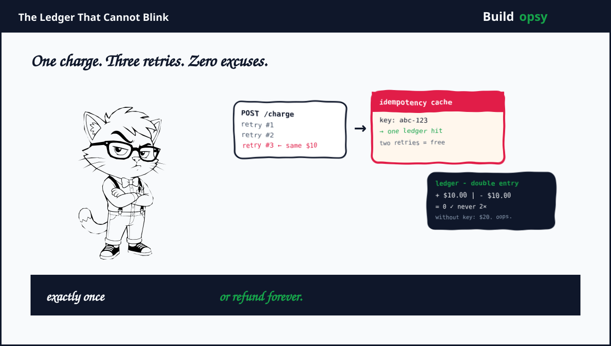

1. The Double Charge You Cannot Explain
A customer taps pay. The browser sends POST /v1/charges. The network stalls for four seconds. The client does the responsible thing and retries with the same intent. Somewhere two identical requests approach your system. If your code inserts a row twice then one tap becomes two charges, one refund path and a support ticket that never ends.
The retry is not an edge case. It is the expected path. Mobile networks fail mid flight, load balancers time out, webhooks get retried for seventy two hours under exponential backoff. The architecture must treat every incoming request as a potential duplicate that should return the original result without creating a second side effect. Idempotency is not a feature toggle. It is the primary correctness property for money movement.
The network will retry exactly when you most wish it would not. That is not a bug. That is the spec.
2. Why Stripe Is the Right Autopsy
Stripe reported $1.4 trillion in total payment volume processed in 2024, up from $1 trillion in 2023 and disclosed roughly five hundred million API requests per day at peak. It publishes rate limits, idempotency guarantees, webhook delivery semantics and an explicit double entry ledger design that other fintech vendors hide.
That transparency makes Stripe a clean forensic target. The ledger is append only, entries balance to zero per transaction and reconciliation runs as a separate control plane. Idempotency keys are stored for twenty four hours and return the prior response for a duplicate request. Webhooks retry with exponential backoff for up to seventy two hours until the receiver acknowledges. Each of those guarantees reads well in docs and costs real infrastructure at platform scale.
"Idempotency keys allow you to safely retry requests without accidentally performing the same operation twice" Stripe docs note. In payments that sentence is worth more than any rate limit.
Payments infrastructure is also unforgiving about cost attribution. A double entry ledger that fans every transaction into multiple balance entries multiplies storage. A retry that reaches the origin multiplies idempotency lookups. A webhook that fires three downstream systems multiplies egress. When the unit is money, the multiplier hides in the journal.
3. Reconstructing the Machine
A client sends an API request with an idempotency key header. Edge routing validates auth, rate limits per key and looks up the idempotency store before touching the ledger. If a stored response exists and the original is complete, the edge returns the cached result without a second ledger entry. If the key is new or the original is still processing, the request proceeds to the ledger writer.
The ledger writer uses double entry bookkeeping. A $10.00 payment creates at least two balanced entries that sum to zero, plus additional entries for fees, transfers and settlement. The canonical store often mixes a strongly consistent relational core for ledger truth with Kafka backed streams for downstream processors and with Dynamo style stores for idempotency and webhook state. Webhooks enqueue per endpoint, retry independently and isolate noisy receivers so one slow URL does not block payout notifications for every merchant.
Payouts and settlement form another bounded context. Intraday authorization and capture are latency sensitive and correctness critical. Batch settlement, risk and reporting consume the same raw events but tolerate delayed consistency. The boundary between immediate ledger mutation and downstream settlement stream decides how much of the platform must be linearizable on the critical path.
4. Idempotency: The Expensive Cache That Prevents Lawsuits
Stripe stores idempotency keys for twenty four hours and checks them at the edge before expensive work. A duplicate window of twenty four hours sounds long until you count mobile retries, webhook replays and dashboard refresh loops. A consumer retry that arrives at hour twenty three should still return the original charge object, not a fresh transaction.
The store is not a best effort cache. It must be consistent under thundering herd retries, expire predictably and return the same serialized response for the same key even as load spikes. At five hundred million daily API requests, a duplicate rate of only one tenth of one percent still creates five hundred thousand idempotency lookups per day for duplicates alone. That number grows when outages trigger client retry storms.
The second cost is lock duration. An in flight request holds the idempotency key until the ledger confirms or rolls back. A slow ledger confirmation keeps the key locked longer, which raises the chance that a retry waits on the lock rather than receiving a cached response. Faster ledger commit shortens idempotency lock windows. In payments, latency is not just user experience. It is retry rate.
5. The RPS Model: How Many Payment Events Does $1.4T Make
Convert volume to events with simple arithmetic. Assume average payment size of fifty dollars. That gives twenty eight billion payments per year or roughly eighty eight payments per second average. That average hides the useful number. Payments cluster around sales peaks, especially Black Friday. Assume a peak burst multiplier of sixty times the yearly average. Modeled peak payments per second become roughly fifty three hundred.
Each payment fans out. Count one API request, one idempotency lookup, at least four ledger entries for double entry plus fees, two downstream stream events and three webhook delivery attempts counting retries. That fan out turns fifty three hundred payments per second into roughly fifty thousand system events per second at peak before read traffic like balance queries, refund checks and dashboard loads.
Add non payment traffic. Assume balance reads, search and reporting add another twenty thousand requests per second at peak. Total modeled platform event load at burst reaches seventy thousand events per second that touch origin when cache misses, well before background risk, settlement and observability pipelines.
| Workload | Assumption | Modeled result |
|---|---|---|
| Average payments per sec | $1.4T volume at $50 avg | 88 per sec |
| Peak payments per sec | 60x burst multiplier | 5.3k per sec |
| Fan out per payment | idempotency plus ledger plus hooks | ~10 events |
| Payment driven events at peak | 5.3k times 10 | 53k events per sec |
| Peak platform events | plus reads and reporting | 70k per sec |
6. The Cost Model: Where Money Costs Money
Model the fleet for the seventy thousand peak origin events. Assume three hundred API hosts across regions with primary plus standby, at blended six hundred thousand dollars per month for compute, routing and vault. Add Dynamo style idempotency fleet for twenty four hour retention at one hundred thousand dollars per month. Add Kafka and stream processors at one hundred forty thousand per month.
Ledger storage dominates at volume. Double entry retention is durable and auditable, so assume ledger store plus balance materialization at three hundred fifty thousand dollars per month including replicas and backups. Add webhook delivery fleet plus dead letter queues at ninety thousand per month. Add observability, reconciliation and compliance workloads at one hundred ten thousand per month. Total modeled envelope lands around one point three nine million dollars per month or roughly forty six thousand dollars per day.
| Cost center | Modeled monthly | What moves it |
|---|---|---|
| API and vault fleet | $600k | regions and host class |
| Idempotency store | $100k | window and duplicate rate |
| Streaming fabric | $140k | retention and throughput |
| Ledger storage | $350k | entries per payment |
| Webhook fleet | $90k | retry window and fan out |
| Observability and recon | $110k | audit load |
| Total | $1.39M |
7. The One Million RPS Thought Experiment
Normalize to one million API requests per second for one month. A month holds 2,592,000 seconds. Assume each request averages two kilobytes inbound plus two kilobytes outbound including keys, headers and response bodies. Logical data crossing the edge is roughly four million kilobytes per second or about nine point seven petabytes per month before stream replication.
In the current shape, assume origin cost of $0.0000015 per request for idempotency lookup, ledger coordination and platform overhead. Current shaped bill is 1,000,000 times 2,592,000 times $0.0000015 equals $3.89M per month.
My proposed shape reduces origin work to forty percent through idempotency served at the edge, read cache for balance queries, stream based settlement off the critical path and webhook isolation per endpoint. Assume origin rate falls to $0.0000011 per request. Core origin work becomes 400,000 times 2,592,000 times $0.0000011 equals $1.14M per month. Add four hundred thousand dollars for edge idempotency, cache, stream buffer and webhook isolation fleet. Proposed envelope is about $1.54M per month.
| At 1M RPS | Retry naive shape | Idempotency first shape |
|---|---|---|
| Origin requests | 1,000,000 per sec | 400,000 per sec after edge dedupe |
| Modeled rate | $0.0000015 per req | $0.0000011 per req |
| Core origin work | $3.89M | $1.14M |
| Edge and safety layer | Included | $400k |
| Modeled monthly total | $3.89M | $1.54M |
| Difference | $2.35M per month, about 60 percent lower | |
return cached response
before ledger
balance zero
short lock wins
ledger is truth
72 hr backoff
off ledger
final word
This figure appears after the cost model on purpose. First price the duplicate. Then decide where to stop it.
8. How I Would Cut the Bill Without Cutting Correctness
Serve idempotency at the edge. Cache idempotency responses in a globally replicated store close to the client with a strongly consistent origin fallback. A duplicate that gets answered at the edge costs a lookup, not a ledger lock. At payments scale the edge is a financial control.
Make ledger entries compact. Represent fees, transfers and settlement as separate streams derived from the canonical payment event rather than writing every derived balance inline on the payment transaction. Keep per transaction ledger work minimal and fan out downstream
Isolate webhook retries per endpoint. Queue each webhook URL independently, apply circuit breaking per merchant and drop or back off noisy receivers without holding global delivery threads. One merchant webhook that never acks should not raise p99 for every other merchant.
Cache balance reads aggressively. Most GET /balance and dashboard queries do not need fresh ledger read after commit. Serve balance from a materialized view with a freshness token and route only payout or risk critical reads to strong consistency. The cheapest ledger read is the one you did not do. My Supabase teardown proved the same point for RLS reads and my Lovable teardown proved it for preview polling.
Commit fast to shrink the idempotency window. Keep ledger transaction time minimal by separating settlement processing from synchronous payment write path. A faster synchronous ledger trims idempotency lock duration which trims duplicate collisions which trims origin load in a loop.
Treat reconciliation as a product. Reconciliation should run continuously, compare ledger sum against downstream views and emit cost and correctness metrics per merchant and region. A ledger that cannot prove it balances is not a ledger. It is a hopeful log file.
9. The Verdict
Stripe looks boring in the best way. The API is predictable, the errors are explicit and the ledger never argues about arithmetic. The postmortem is not that Stripe charges too much or scales poorly. It is that financial infrastructure pays a correctness premium on every retry that other domains dismiss as noise.
Idempotency turns retries into cached responses. Double entry turns one user action into multiple auditable entries. Webhook semantics turn one payment into many delivery attempts. Each guarantee is worth the cost because the alternative is a double charge, a mismatched balance or a silent settlement failure. The win is not removing the guarantees. It is moving them to the cheapest place where they still hold.
A ledger cannot blink. Your edge can answer before the ledger even looks.
Sources and Method
Stripe product facts plus idempotency and webhook notes come from Stripe docs and disclosures linked below. The RPS and cost model is my own scenario math, not Stripe telemetry. Use production measurements before capacity decisions.